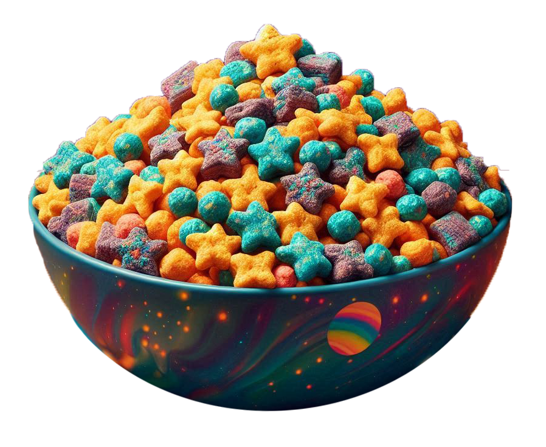
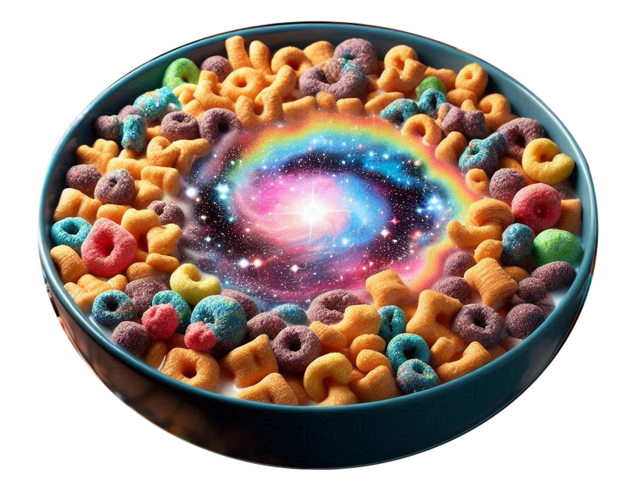

Milky Way Magic!
Picture this: tiny cereal galaxies swirling in your bowl, releasing bursts of fruity flavor as they collide with the milk. Strawberry comets, orange asteroids, and lemon meteor showers—all dancing together in cosmic harmony.
Milky Way Magic!
Picture this: tiny cereal galaxies swirling in your bowl, releasing bursts of fruity flavor as they collide with the milk. Strawberry comets, orange asteroids, and lemon meteor showers—all dancing together in cosmic harmony.

Nutrition from the Stars
Cosmic Crunchies still pack a punch when it comes to nutrition. They’re like mini supernovas of vitamins and minerals, fueling your little astronauts for their day’s adventures.
Parents, rejoice! Cosmic Crunchies in milk are made with real fruit and whole grains. No artificial colors, no preservatives—just pure cosmic delight.
Start your day off right!
Grab your spoon and launch into a Milky Way of flavor. Cosmic Crunchies: where imagination meets breakfast!
Milky Way Magic!
Picture this: tiny cereal galaxies swirling in your bowl, releasing bursts of fruity flavor as they collide with the milk. Strawberry comets, orange asteroids, and lemon meteor showers—all dancing together in cosmic harmony.
